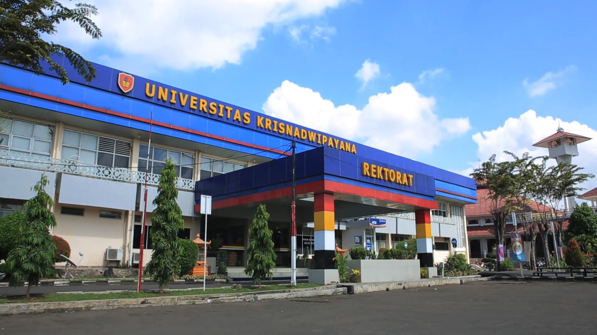

Kuliah
Berdirinya UNIVERSITAS KRISNADWIPAYANA (UNKRIS) dirintis oleh Bapak D. Usman Iman pada bulan Februari 1952, dengan membuka konsulat Balai Perguruan Krisnadwipayana yang berpusat di Bandung. Konsulat tersebut menyelenggarakan kuliah tertulis Jurusan Hukum, serta membuka beberapa sekolah menengah dan sekolah kejuruan di Kebayoran, Serang, dan Tangerang. Untuk menampung aspirasi pembangunan guna mengisi kemerdekaan, di Kota Bandung didirikan Badan Usaha Rakyat yang dirintis oleh bekas pejuang RI. Badan Usaha tersebut antara lain mempunyai program dalam bidang pendidikan dan kesehatan, serta sebagai sarana operasionalnya dibentuk Balai Perguruan Krisnadwipayana. Balai perguruan tersebut terus berkembang, kemudian dibentuk Perguruan Tinggi Krisnadwipayana dengan Fakultas Hukum dan Ekonomi yang saat itu mengadakan kuliah lisan di Jl. Abon No. 3 Bandung. Selain kuliah tertulis yang diikuti oleh 1200 mahasiswa dari segenap pelosok tanah air seperti Ujung Pandang, Banjarmasin, Denpasar, Medan, Palembang, Surabaya, Semarang, dan Kupang. Pada beberapa kota diadakan Perwakilan/Konsulat yang menyalurkan kuliah-kuliah tertulis tersebut. Beberapa Konsulat tersebut kemudian ada yang menjadi embrio dan berkembang menjadi perguruan tinggi yang akhirnya ada yang berkembang menjadi Universitas Negeri. Atas desakan para mahasiswa, didirikan Akademi Hukum dan Sosial Krisnadwipayana di Jakarta yang memberikan kuliah secara lisan. Akademi tersebut yang dibuka resmi pada 1 April 1952 dengan diikuti oleh sekitar 300 mahasiswa. Untuk kantor dan ruangan kuliah saat itu menyewa di Gedung Adhuc-staat, yang saat ini menjadi Kantor BAPPENAS..